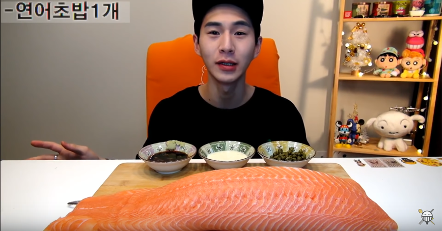
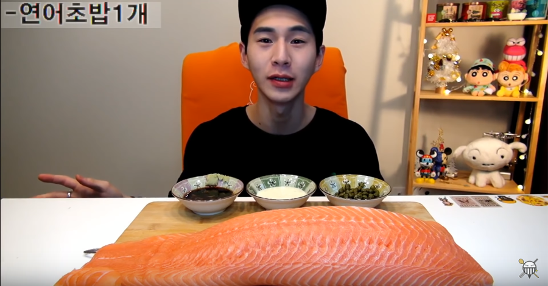

현재 유튜브 구독자 343만이 넘게 보유하고 있으며 먹방 스트리머 1위를 고수하고 있으며 스트리머이다.
떵개 그리고 개떵, 두 형제가 먹방을 진행한다.
특히 ASMR 방송인 ‘리얼사운드’로 유명하다.
특히 음식을 먹을 때 나는 소리를 듣는 재미가 쏠쏠하다.
라면, 치킨, 떡볶이 등 한국의 일반적인 음식뿐만 아니라 사탕수수, 알로에, 벌꿀 등 식탁에서 흔하게 볼 수 없는 음식을 먹는 걸로도 유명하다
 

현재 유튜브 구독자 320만을 넘게 보유하고 있다.
구독자의 수를 봐서 알 수 있듯. 밴쯔는 먹방의 대표적인 아이콘이라고 할 수 있다.
또한 최근 온라인 플랫폼이 아닌 방송사 JTBC의 프로그램 랜선라이프에 출연해 그의 인기를 방증했다.
그는 엄청난 양의 음식을 먹는 것으로 유명하다.
그럼에도 불구하고 영상에서 근육질의 몸매를 보여주고 있다.
그는 건강을 위해 하루 평균 8시간 이상의 운동을 한다고 밝혔다.
대표적인 먹방으로 홍대 괴물짜장 먹방, 햄버거 10개 빨리먹기, 짜장면 먹방 등이 있다.
현재 유튜브 구독자 291만을 넘게 보유하고 있다.
2018년 들어 유튜버 먹방계에서 큰 인기를 끌고 있다.
파급력도 대단해서 도로시의 먹방으로 유명세를 탄 송주불냉면, 중국당면, 청주미친만두 먹방을 하지 않은 유튜버를 찾기 힘들 정도.
특히 송주불냉면+실비김치+삼겹살 먹방과 파김치 먹방 영상이 1500만 넘는 조회수가 찍히면서 그해 7월 구독자 100만명을 돌파했고, 빠른 속도로 200만도 달성했다.